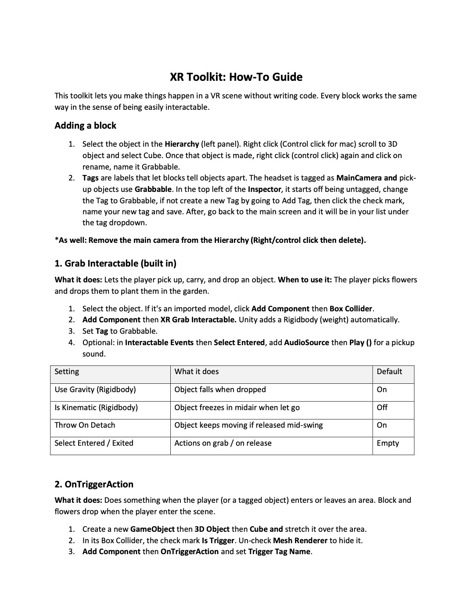
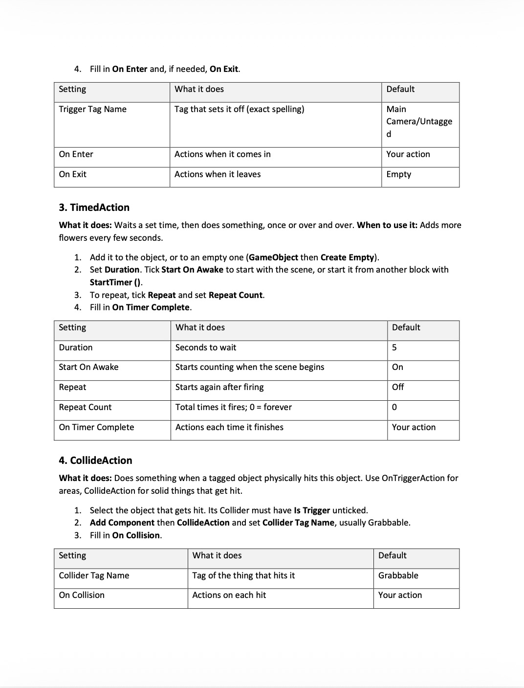
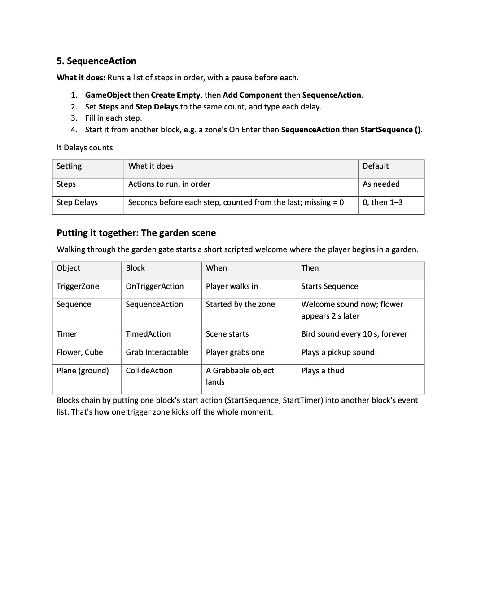

Unity No-Code Toolkit

Documentation Guide



Description
For this assignment, I created a mixed reality (XR) experience using Unity, called Unity No-Code Toolkit! The goal of this was to create an interactive experience between the player and objects and how they respond to one another in the game system having more user interactivity! We were taught more ways we can use Unity to create interactable objects such as objects that can be picked up and dropped.
Three Key Takeaways
What was Easiest?
I felt that making the material and writing the code in C# was the easiest. Making the material wasn't terribly difficult as well as writing the C# code.
What was Hardest?
I felt that modifying and getting the right behvior of the objects was the hardest part of the assignment. This is because getting the objects to behave correctly in a mixed reality environment is difficult to get 100% correct. I also ran into errors where certain things should have been checked that weren't and it was hard to find the root of the problem.
What Did I Learn?
I learned how to use the no-code toolkit in Unity to create more interactive objects. I also learned how to use the toolkit to create objects that can be picked up and dropped.
Connecting to My XR Documentary
I connected this assignment to my XR documentary by using the pickup and drop functionalities to create a more interactive experience for the user. Now that the toolkit is available, both CS and ENG students can use it to create more interactive experiences for the SoXR documentary. This will allow for more user interactivity and engagement with the content of the documentary because more group members will be able to contribute with enough knowledge on what they are creating. The limits of not having a programmer available is if ENG students have certain questions, we won't be able to answer them appropriately, thus prohibiting the project from getting completed to the fullest potential. With the toolkit, ENG students can create more interactive experiences without needing to know how to code, thus allowing for more group members to contribute to the project and make it more engaging for the user.
Challenges Faced
The hardest part of the assignment was writing the documentation guide. I'm not the best writer so finding the write words ti explain what was going on was hard.